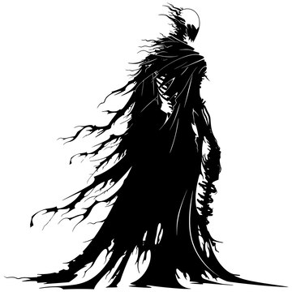
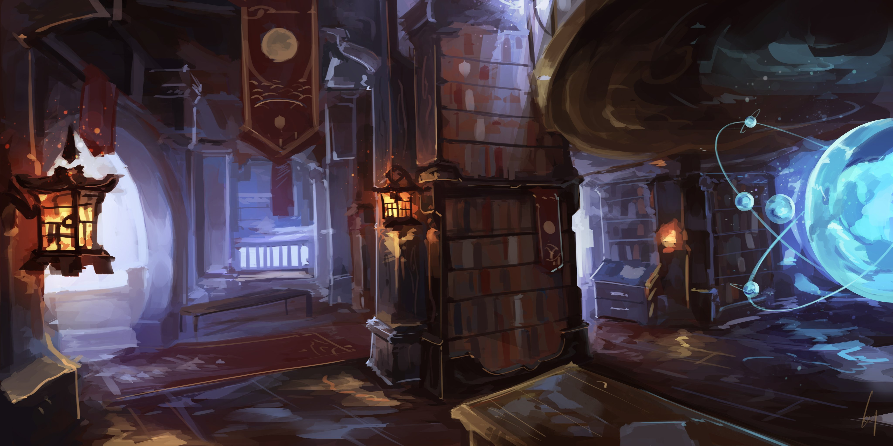

Random Encounter:

Genius was not someone who fought with swords - he used sorcery. Spells, rituals, potions, and traps paved the way for his ascencion to lichdom - and his powers only grew from there.
From his safety in the study, Genius did his best to put down the rebellion. But some of his actions may have harmed the other guardians more than it helped them: the Wilds became blighted, the City became haunted with ghosts, the Depths were flooded, and the Tower was shrouded in a storm. Only the Citadel remained untouched by magic, though whether this was out of safety for what lay in the royal chambers or fear of Kalis' retribution, no one knows.
Even though his magic has been strained terribly, Genius will survive as long as his phylactery remains unharmed. Should he die, the curses in the various regions will lift, making things easier for the party - and their enemies.
